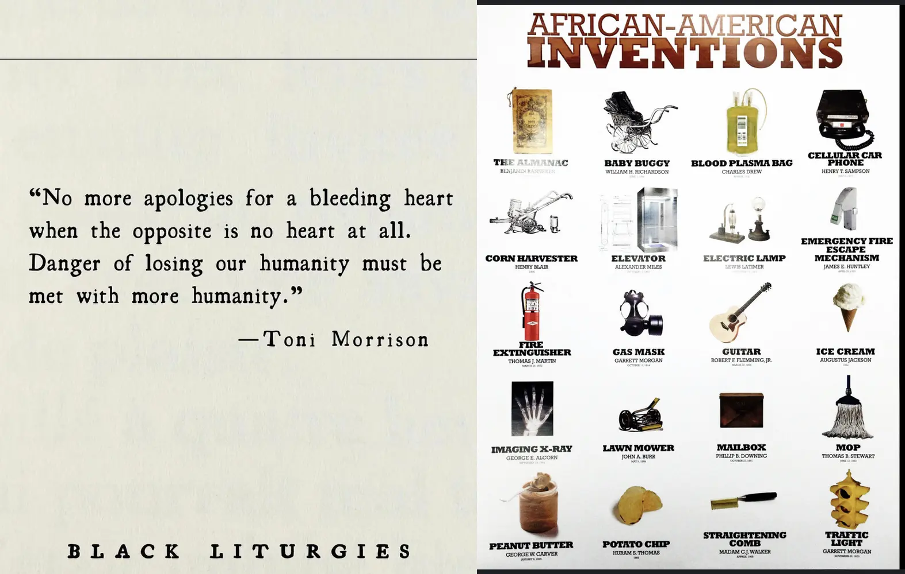

Happy Monday! Welcome back! Thank you very much for supporting the Daily Bulletin. If you want to provide any suggestions, feel free to fill this form. Please note that this is supplementary to The Week Ahead: please still check The Week Ahead for official information. By default, we will deliver a similar email to your inbox every day; if you no longer wish to receive this email anymore, please unsubscribe. Thank you!
周一快乐！欢迎回到学校！感谢您支持每日公告。如果您想提出建议，请填写这个问卷。请注意，每日公告只是每周展望的补充，若想获得官方信息，请继续查阅每周展望。我们每天都会向您的收件箱投递一封类似的邮件；如果您不想继续接收每日公告，请取消订阅。谢谢！
Community Time 午休时间
| Day | Y9 | Y10 | Y11 | Y12 |
|---|---|---|---|---|
| Mon | Whole School Assembly (Gym) | |||
| Tue | Tutor Time | |||
| Wed | Health Talk (Auditorium) | AAO: S1 Awards Convocation | Tutor Time | Health Talk (Auditorium) |
| Thu | Tutor Time | AAO: S1 Awards Convocation | ||
| + | ||||
Important Events 重要事件
| Day | Events |
|---|---|
| Mon | CCA Season 3 Starts |
| + |
Fetched from Songjiang Student Calendar.
选自松江校区学生日历。
Delicious Dinings 今日佳肴
| Day | Taste of Asia | Eat Global | Revolution | Morning Snack | ||||
|---|---|---|---|---|---|---|---|---|
| Mon | Qiang Pastry 火腿羌饼 |
Black Rice Bun 黑米馒头 |
Boiled Egg 白煮蛋 |
Mashed Potatoes, Tomato, Bacon and Cheese Pancake 土豆泥番茄培根芝士饼 |
Oatmeal 麦片粥 |
Hash Browns 薯饼 |
Steamed Pork Bun 小肉包 |
|
| Tue | Pan-fried Beef Bun 牛肉煎饼 |
Dough Stick 油条 |
Steamed Egg 蒸鸡蛋 |
Onion Egg Cake Frittata 洋葱鸡蛋饼 |
Roast Sweet Potato 烤红薯 |
Spanish Breakfast Sausage 西班牙猪肉早餐肠 |
Pork with Rice Noodles and Egg 鸡蛋猪肉丝炒河粉 |
Malazhan Cake 马拉盏 |
| Wed | Meat Bun 鲜肉包 |
Steamed Bun / Shandong Pancake 花卷 / 山东煎饼 |
Fried Egg with Dried Radish 萧山萝卜干炒鸡蛋 |
Roasted Tomato 烤番茄 |
Benedict Egg & Hollandaise Dauce 班尼迪克蛋配培根菠菜 & 荷兰酱 |
Baked Sweet Potato 烤红薯 |
Celery and Pork Dumplings 芹菜猪肉饺子 |
Fried Pork Dumplings 猪肉煎饺 |
| Thu | Radish Pork Pastry 萝卜丝猪肉饼 |
Sticky Rice Cake 松糕 |
Stir-fried Egg 小葱炒鸡蛋 |
Mixed Beans 烩混合豆 |
Shakshuka 北非蛋 |
Prague Style Ham 布拉格风味火腿 |
Chicken Fried Rice 上海酱油鸡肉炒饭 |
Blueberry Muffin 蓝莓麦芬 |
| Fri | Shaomai 烧麦 |
Custrd Bun / Stuffed Sticky Rice Ball 奶黄包 / 粢饭团 |
Tea Egg 茶叶蛋 |
Roasted Mushroom 烤香菇 |
Baked Eggs with Cheese Sausage on Toast 芝士香肠吐司烘蛋 |
Baked Beans 茄汁焗豆 |
Pork and Preserved Vegetable Noodles & Bean Curd 雪菜肉丝面 & 素鸡 |
Shaomai 烧卖 |
| + | ||||||||
| Day | Taste of Asia | Eat Global | Revolution | Piccola Italia | Vegetarian | Afternoon Snack | ||
|---|---|---|---|---|---|---|---|---|
| Mon | Braised Pork 外婆红烧肉 |
Fried Egg with Tomato 西红柿炒蛋 |
Grilled Fish with Fennel Sauce 扒鱼柳配茴香汁 |
Asparagus & Carrot 芦笋 & 胡萝卜 |
Spiced Duck Leg Noodles 五香鸭腿面/兰花干 |
Pasta with Classic (Beef) Sauce 牛肉酱拌意大利面 |
Okra and Bean Puree & Creamy Lentil 秋葵豆泥 & 奶油扁豆 |
Apple Danish 苹果丹麦酥 |
| Tue | Xinjiang Chicken 新疆大盘鸡 |
Sliced Beef in Oyster Sauce 蚝油牛肉片 |
Pork Tenderloin with Spinach 猪里脊配菠菜 |
Sautéed Broccoli 西兰花 |
Sichuan Style Stew Pork Noodles 回锅肉面 / 虎皮蛋 |
Pasta Shrimps with Cream of Mushroom 奶油蘑菇虾仁意面 |
Fried Udon Noodle with Egg & Vegetables 鸡蛋炒乌冬面 / 素鸭 |
Pork Tacos 墨西哥猪肉卷 |
| Wed | Hot Braised Shrimp 元宝虾 |
Stewed Egg Cake 农家高汤火腿烩蛋饼 |
Duck Carbonade 法式炖鸭块 |
Roasted Baby Cabbage 烤娃娃菜 |
Braised Beef Noodles 红烧牛肉面 / 卤干 |
Ham & Cheese Sandwich with Black Pepper 火腿芝士三明治 / 鸡块 |
Z-Rou Meat Balls with Cream Mushroom Stew Pasta 株肉球烩奶油蘑菇酱配意大利面 |
Butter Cake with Dried Fruit 英式果脯蛋糕 |
| Thu | Boiled Fish with Preserved Vegetable 酸菜鱼 |
Braised Bean Curd with Minced Pork 肉丝烧素鸡 |
Orleans Roast Chicken Leg 奥尔良烤鸡腿 |
Grilled Zucchini 烤西葫芦 |
Barbecued Pork Noodles 叉烧面/荷包蛋 |
Tomato Seafood Vegetable Pasta 番茄鱿鱼蔬菜意面 |
Pan-fried Shredded Potato Cake 土豆丝饼 / 荷包蛋 |
Ham & Cheese Croissant 火腿芝士羊角 |
| Fri | Nanjing Salted Duck 南京盐水鸭 |
Fried Shredded Pork with Dried Bamboo Shoots 香干笋丝炒猪肉丝 |
Roasted Pork Leg 脆皮烤猪大腿 |
Mini Beetroots 烤迷你菜头 |
Seafood Noodles 海鲜面 / 五香素鸡 |
Chicken Cannelloni 焗意大利鸡肉芝士卷 |
Baked Cheese Zucchini with Z-Rou Stuffing and Roasted Pumpkin 植物肉节瓜船配烤南瓜 |
Meat Floss Puff 肉松泡芙 |
| + | ||||||||
| Day | Taste of Asia | Eat Global | Revolution | Piccola Italia | Vegetarian | Evening Snack | ||
|---|---|---|---|---|---|---|---|---|
| Mon | Stewed Chicken with Homemade Special Sauce 钵钵鸡 |
Fried Sliced Pork with Yam and Fungus 山药木耳炒猪肉片 |
Classic Beef Goulash 经典匈牙利烩牛肉 |
Fried Cowpeas 扒豇豆 |
Noodles with Pork and Scallion Oil 猪肉葱油拌面 / 荷包蛋 |
Hot Dogs with Fried Potatoes 热狗配炸土豆 |
Celery and Shredded Bean Curd with Black Rice 芹菜炒素肉丝配黑米饭 |
Fruit & Fruit Yoghurt 水果 & 果味酸奶 |
| Tue | Shanghai Stewed Pork with Bamboo 上海腌笃鲜 |
Fried Eggplant, Potatoes and Green Pepper with Chicken 鸡片炒地山鲜 |
Polish Apple Roast Duck 波兰苹果烤鸭 |
Baked Cauliflower with Cheese 芝士焗花菜 |
Fish Noodles 金汤鱼面 / 素鸡 |
Lasagna 千层面 |
Vegetarian Lasagna 蔬菜株肉千层面 |
Fruit & Yoghurt 水果 & 酸奶 |
| Wed | Xiangxi Braised Duck 湘西土匪鸭 |
Stewed Tofu with Ham, Fungus, Water Bamboo Shoot 三鲜火腿家常豆腐 |
Roasted Sausage and Cheese 烤芝士香肠 |
Sauerkraut 酸椰菜 |
Stewed Pork Noodles 苏式焖肉面 / 盐水豆干 |
Mexico Fish Taco 墨西哥鱼饼 |
Sweet and Sour Lotus Root and Mixed Grains 糖醋藕夹配杂粮饭 |
Fruit & Chocolate Soy Milk 水果 & 巧克力豆奶 |
| Thu | Stir-fried Lamb with Cumin 新疆孜然羊肉 |
Fried Diced Fish with Corn and Bell Pepper 五彩黄金鱼丁 |
Fragrant Roast Spring Chicken 香烤春鸡 |
Grilled Eggplant 烤茄子 |
Prawn with Tomato Noodles 番茄红汤大虾面 / 白煮蛋 |
Spaghetti Bolognaise 意大利面配猪肉酱 |
Fried Mixed Mushrooms with Couscous 香炒混合蘑菇配中东小米 |
Fruit & Yoghurt 水果 & 酸奶 |
| + | ||||||||
Daily Inspiration 每日灵感
Quote of the Day 每日引言
This is a disaster. Look at the air, listen to the buzzing of the sun, the same as yesterday and the day before. Today is Monday too.
— José Arcadio Buendía
Excerpt from "A Hundred Years of Solitude" by Gabriel García Márquez. Shared by Albert Tan.
选自加西亚 · 马尔克斯《百年孤独》。由 Albert Tan 分享。
Black History Month Specials 黑人历史月特辑
Shared by Barry Shen.
由 Barry Shen 分享。
On This Day 以史为鉴
- 1600 – The stratovolcano Huaynaputina, in present-day Peru, produced the largest recorded volcanic explosion in South America.
- 1910 – Old Trafford, a football stadium in Greater Manchester, England, hosted its inaugural match, between Manchester United and Liverpool.
- 1942 – Second World War: In the largest attack mounted by a foreign power against Australia, more than 240 Japanese aircraft bombed the city of Darwin.
- 2012 – Mexican drug war: Forty-four inmates died in a prison riot in Apodaca, Mexico, between members of Los Zetas and the Gulf Cartel.
- 197年 – 罗马皇帝塞提米乌斯·塞维鲁的军队在卢格杜努姆击败克洛狄乌斯·阿尔比努斯的军队。
- 1594年 – 在约翰三世逝世后，波兰立陶宛联邦国王齐格蒙特三世加冕成为瑞典国王。
- 1600年 – 位于秘鲁莫克瓜大区的瓦伊纳普蒂纳火山大规模喷发，间接造成200万人死亡。
- 1861年 – 俄罗斯皇帝亚历山大二世签署《农奴解放宣言》，宣布废除庄园的农奴制度。
- 1945年 – 美国海军陆战队开始进攻日本守军坚守的硫磺岛，硫磺岛战役爆发。
Births and Deaths: Thomas Arundel (d. 1414); Émilie Gamelin (b. 1800); Tim Shadbolt (b. 1947)
Fetched from Wikipedia.
选自维基百科。
In the News 时事要闻
- Russian opposition leader Alexei Navalny dies in a penal colony near Kharp, at the age of 47.
- In American football, the Kansas City Chiefs defeat the San Francisco 49ers to win the Super Bowl.
- In association football, the Africa Cup of Nations concludes with Ivory Coast defeating Nigeria in the final.
- Alexander Stubb is elected President of Finland.
- Marathon world record holder Kelvin Kiptum dies in a car crash at the age of 24.
- 日本H3运载火箭在种子岛宇宙中心首次发射成功。
- 俄罗斯反对派政治人物阿列克谢·纳瓦利内死于流放地监狱中。
- 韩国与古巴自1959年因古巴革命断交以来首度复交。
- 芬兰前总理亚历山大·斯图布在总统选举第二轮投票中获胜，当选新任芬兰总统。
- 堪萨斯城酋长在美国全国橄榄球联盟第58届超级碗中以25比22战胜旧金山49人，成功卫冕；帕特里克·马霍姆斯获选最有价值球员。
Ongoing: Israel–Hamas war; Myanmar civil war; Red Sea crisis; Russian invasion of Ukraine
Recent deaths: Imtiaz Qureshi; Johanna von Koczian; Mihai Amihalachioaie; Folake Onayemi; Ventura Pérez Mariño; Robert Badinter
正在发生：俄罗斯入侵乌克兰；以色列—哈马斯战争；也门空袭
最近逝世：阿列克谢·纳瓦利内；查克·马威尼；陈俊翰；凯尔文·基普图姆；爱德华·洛瓦萨
Fetched from Wikipedia.
选自维基百科。